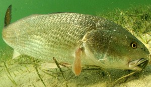
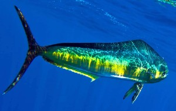

Commonly Caught Fish in America
Freshwater
Largemouth Bass
- Description:
- "Robust, olive-green fish with a wide, horizontal dark stripe along its side. The distinguishing feature of largemouth bass is that the upper jaw extends beyond the rear margin of the eye."
- Habitat and Distribution:
- Mainly located in warm, shallow waters with plentiful plants or other covers. They are indigenous to North America and are widely spread across the United States, especially in the southeastern states.
- Fishing Methods and Preferred Lures/Baits:
- "Topwater lures, spinnerbaits, crankbaits, and soft plastic worms are all effective for catching largemouth bass." The key is to imitate the motions of their natural food and focus on areas with cover or structure where bass are likely to be hiding.

Blue, Channel, and Flathead Catfish
- Description:
- "Channel catfish have a slender, grayish bodies with small, dark spots, while blue catfish are bluish-gray and lack spots. Flathead catfish are large, brownish-yellow fish with a flattened heads and protruding lower jaws."
- Habitat and Distribution:
- Catfish species are located in numerous aquatic habitats, like ponds, lakes, and rivers. Channel catfish are widespread throughout North America, whereas Blue catfish are mainly located in the southeastern U.S., and Flathead catfish live in the southeastern and central areas of the country.
- Fishing Methods and Preferred Lures/Baits:
- Catfish are bottom-feeders and are usually caught using cut or live bait, like shad, other fish, or worms. "Bottom rigs and slip-sinker setups work well for catfish. In some cases, artificial lures or jigs may be used, but natural bait is generally more effective."

Saltwater
Redfish
- Description:
- "Redfish, also known as red drum, is a robust, reddish-bronze fish with a dark spot near the base of its tail. They have a sloping forehead, a downward-pointing mouth, and a distinct black lateral line along their body."
- Habitat and Distribution:
- Redfish are located in Gulf of Mexico and Atlantic coastal waters, from Texas to Massachusetts. They live in shallow coastal waters, marshes, and estuaries.
- Fishing Methods and Preferred Lures/Baits:
- Cut or live bait, like crabs, mullet, or shrimp, in addition to artificial lures such as topwater plugs, soft plastics, and spoons can be used to catch Redfish. Drift fishing, sight casting, and wade fishing are popular ways to target Redfish.

Mahi-Mahi
- Description:
- "Mahi-Mahi, also known as dolphin fish or dorado, are vibrantly colored fish with an elongated, streamlined bodies. They have a blunt, rounded head, a large dorsal fin that extends along their back, and a forked tail. Their coloration can vary from bright green and blue to gold and silver, often changing rapidly when excited or stressed."
- Habitat and Distribution:
- Mahi-Mahi live in the warm, tropical, and subtropical waters of the Indian, Pacific, and Atlantic oceans. They are a pelagalic species, typically located close to seaweed, floating debris, or other cover in the open ocean.
- Fishing Methods and Preferred Lures/Baits:
- Mahi-Mahi can be caught using several different methods, including casting, live baiting, and trolling. They like squid and various baitfish, so using cut or live bait, such as squid, ballyhoo, or mullet, can work well. Artificial lures such as poppers, skirted trolling lures, and plugs can also be effective. Mahi-Mahi are known for their aggressive strikes and acrobatic jumps, making them a popular target for sports fishermen.

Source:
The Top Fish Species for Angling Adventures in America
Return to Home Page